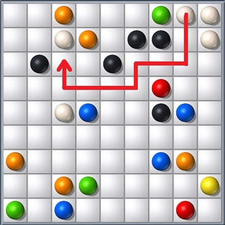

Trò chơi Line là trò chơi di chuyển các viên bi trong một hình vuông 9 x 9 ô. Bi được ăn khi tạo thành các hàng, cột, đường chéo gồm 5 viên bi liên tiếp cùng màu.

Một thuật toán được sử dụng trong trò chơi là tìm đường đi để di chuyển một viên bi. Giả sử trò chơi Line tổng quát có n dòng, n cột. Đánh số các dòng từ 1 đến n theo thứ tự từ trên xuống dưới, đánh số các cột từ 1 đến n theo thứ tự từ trái sang phải. Giả sử có một viên bi tại ô (y, x) - dòng y cột x, bi có thể di chuyển đến 1 trong 4 ô (y+1, x), (y-1, x), (y, x+1), (y, x-1), nếu ô đó đang trống. Cho vị trí bắt đầu và vị trí kết thúc của viên bi, hãy viết chương trình cho biết đường đi của viên bi.
Dữ liệu nhập: gồm các dòng sau
- Dòng thứ nhất gồm năm số n, sy, sx, dy, dx, mỗi số cách nhau một khoảng trắng (2 ≤ n ≤ 9; 1 ≤ sy, sx, dy, dx ≤ n). sy là chỉ số dòng, sx là chỉ số cột của viên bi cần di chuyển. dy là chỉ số dòng, dx là chỉ số cột của vị trí cần di chuyển viên bi đến.
- Trong n dòng tiếp theo, mỗi dòng gồm n số nguyên 0 hoặc 1, mỗi số cách nhau một khoảng trắng, biểu thị tình trạng của trò chơi. Số 1 nghĩa là vị trí ô đó có bi, số 0 nghĩa là vị trí ô đó đang trống.
(Dữ liệu cho bảo đảm tại ô (sy, sx) có giá trị là 1, tại ô (dy, dx) có giá trị là 0)
Dữ liệu xuất:
Nếu tìm được đường đi:
- Dòng đầu tiên in ra số nguyên m là số ô của đường đi. (bao gồm cả ô đầu tiên của viên bi và ô đích)
- Trong m dòng tiếp theo, dòng thứ i in ra hai giá trị yi, xi là vị trí ô thứ i trong đường đi, hai số cách nhau một khoảng trắng.
(Nếu có nhiều đường đi, có thể in ra đường đi bất kỳ)
Nếu không tìm được đường đi: in ra 0.